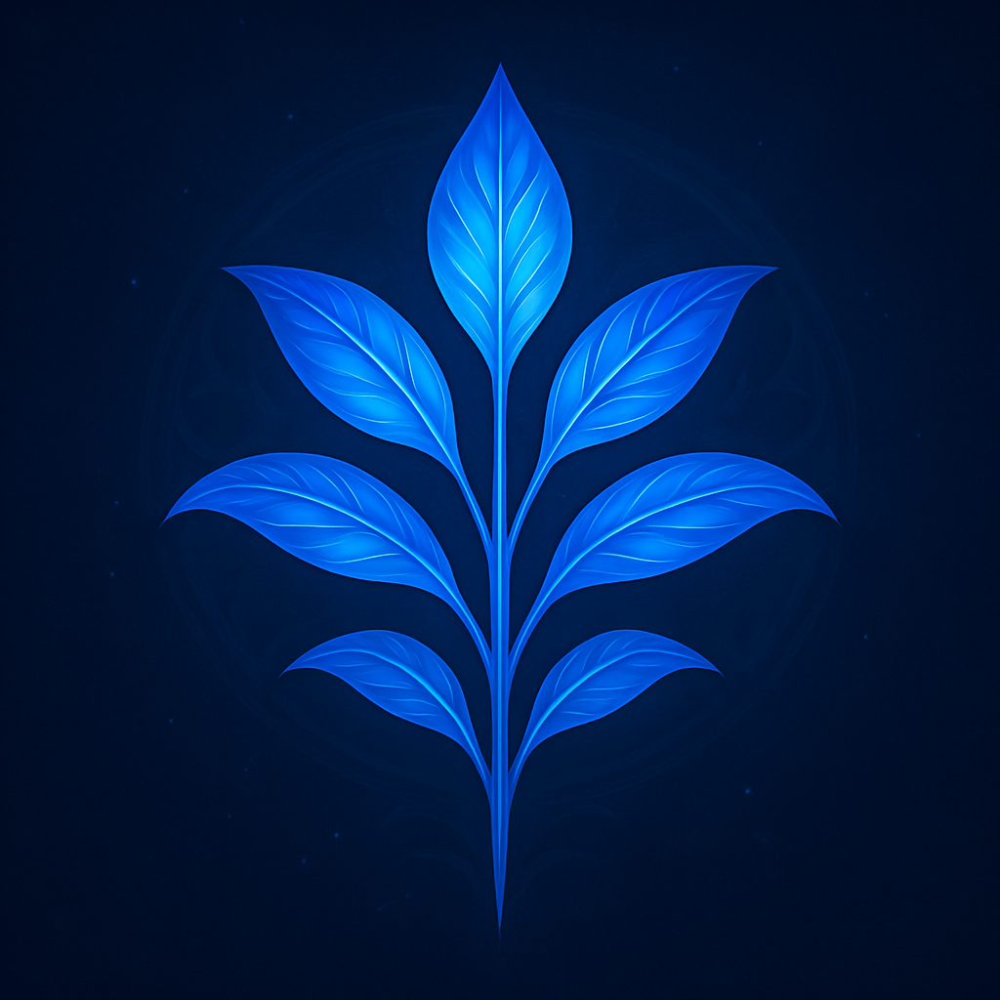

Echotools
Test checklists – one tab per plugin, one list per version ✨
Back to start page
Tester name
Keeps progress apart when several people share a browser, and appears in the report.
Loading plugin list …
Test report
Close
Save as .md
Copy to clipboard